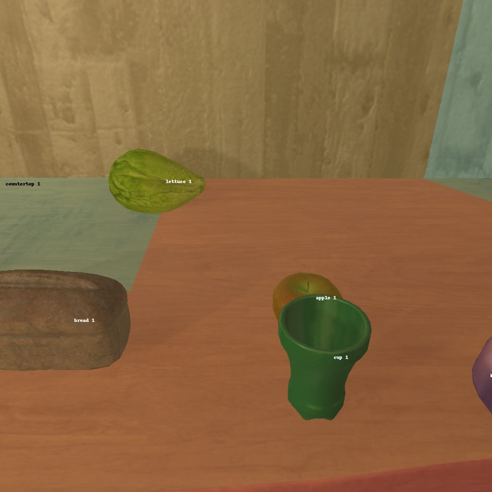

---------------------------------------------------------task: 26---------------------------------------------------------
--------------------------------------------------------------------------------------------------------------------------------------------------------------------
--------------------------------------------------------------------------------------------------------------------------------------------------------------------
Step:--------------------------------------------------------------------------10-------------------------------------------------------------------------------
----------------------------------------
VLM Prompt:
Image1:
Image2:
**Instruction**
1. Analyze the provided image to identify all visible household objects, focusing on those relevant to the task description "find two kettle and put them in cabinet."
2. Use the analysis of the image and the task hint "The agent must find an object of the desired type, pick it up, find the correct location to place it, put it down there, then look for another object of the desired type, pick it up, return to previous location, and put it down there with the other object." to answer the question: what is the most reasonable action in the choices for the task description "find two kettle and put them in cabinet"?
4. Decide and write the answer using the template: The answer is: (i): , where i is the real number. If there is no desired object in the image, search every place based on **Initial Observation** to find the object. And if no one is exactly correct, choose a similar answer.
**Initial Observation**
You are in the middle of a room. Looking quickly around you, you can see countertop (1), coffeemachine (1), cabinet (1-4), drawer (1-8), sink (1), sinkbasin (1), garbagecan (1), fridge (1), microwave (1), dresser (1), sidetable (1)
**Answer Choices**
(1): go to coffeemachine 1
(2): go to cabinet 1
(3): go to cabinet 2
(4): go to drawer 1
(5): go to sink 1
(6): go to sinkbasin 1
(7): go to garbagecan 1
(8): go to cabinet 4
(9): go to drawer 2
(10): go to fridge 1
(11): go to microwave 1
(12): go to dresser 1
(13): go to sidetable 1
(14): go to drawer 3
(15): go to drawer 4
(16): go to drawer 5
(17): go to drawer 6
(18): go to drawer 7
(19): go to drawer 8
(20): take bread 1 from countertop 1
(21): take cup 1 from countertop 1
(22): take lettuce 1 from countertop 1
(23): take apple 1 from countertop 1
(24): take kettle 1 from countertop 1
(25): examine countertop 1
**Answer**
Let's think step by step by following the instructions.
----------------------------------------
----------------------------------------
Original Response:
The task is to find two kettles and put them in the cabinet. From the initial observation, we know there are multiple cabinets and drawers in the room, as well as other household objects and appliances.
In Image 1, we can see "kettle 1" on the countertop. There is no kettle visible in Image 2. Since we need to find two kettles, we should first take the kettle that we can see, which is "kettle 1" on the countertop 1 in Image 1.
Therefore, the most reasonable action from the choices provided would be to take kettle 1 from countertop 1 so we can later place it in the cabinet.
The answer is: (24): take kettle 1 from countertop 1.
----------------------------------------
----------------------------------------
>>> Refine Original VLM Response and Get Pure Action: take kettle 1 from countertop 1
----------------------------------------
-----------------------------------------------------------------
Running time: 12.602283716201782 seconds
Total Money: 13.045690000000004
-----------------------------------------------------------------
-----------------------------------------------------------------
Text Observation:You pick up the kettle 1 from the countertop 1.
-----------------------------------------------------------------
UNSUCCEED